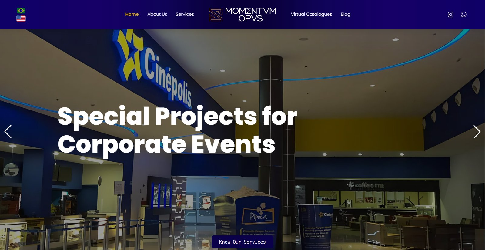

4 different contexts, one methodology
A high-potential site held back by performance and poorly configured SEO, an existing site with visibility problems, a new site built with the right structure from day one, and a business that changed focus and needed a new site — the same method applied to 4 different starting points.

Antídoto
A large company with major clients, and a Webflow site with many gaps in its structure. The fixes unlocked its full potential to bring in new clients.

Momentvm Opvs
A company in the same group as UNDERNEATH, where the method was born: a mature operation with visibility problems, solved with technical and architectural fixes on top of an already published site.

Zavati Estamparia
The right structure applied from the very first commit, with indexing and impressions growing from the start.

La Morocha Tattoo
The old site brought no results and the business changed focus. A new site under the same name, structured for laser tattoo removal.